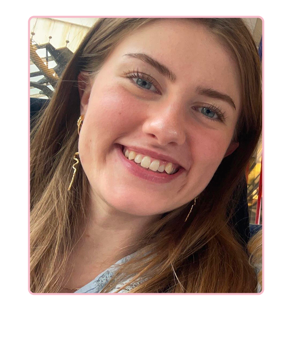
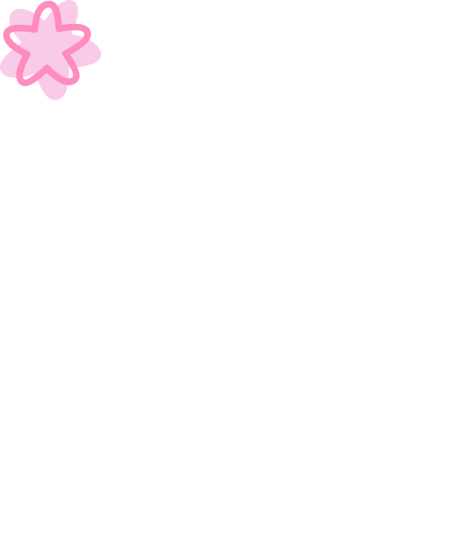
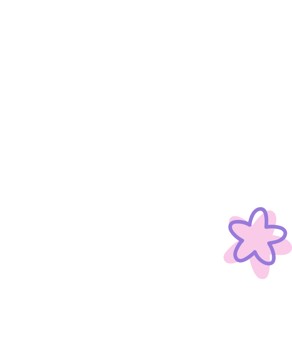
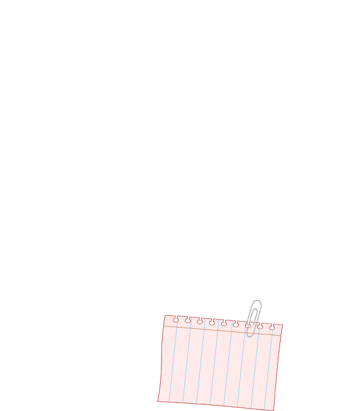
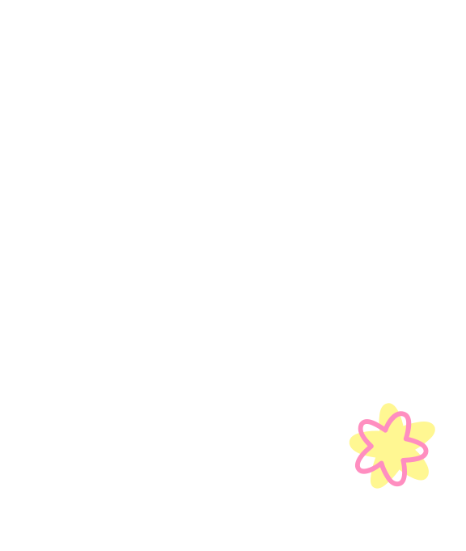
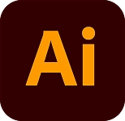
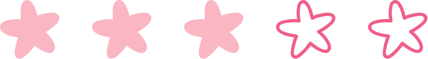
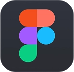
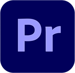
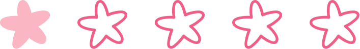

Om mig




Caroline
23 år

Hvem er jeg
Jeg har altid elsket at udfolde mig kreativt, uanset om det har været i form af klassisk tegning, spændende DIY projekter eller andre skøre idéer, hvor kun fantasien sætter grænser. Samtidig har den digitale verden altid fanget min interesse, og jeg har i mange år nydt at bruge min tid på både computerspil og internettet.
Da jeg hørte om multimediedesigner uddannelsen, vidste jeg med det samme, at det var det helt rigtige match for mig. Det lød som den perfekte mulighed for at dykke dybere ned i to af de ting, jeg holder allermest af, kombinere det visuelle med det digitale og på sigt skabe en spændende fremtidig karriere inden for branchen.
Uddannelse
Hanebjerg skole 2008-2018
Midtsjællands Efterskole 2018-2019
Frederiksværk Gymnasie 2019-2022
Roskilde universitet 2023-2023
Erhversakademi København 2026-
Erhverserfaring
Ungarbejder Normal 2019-2020
Elos Medtech 2022-2022
Salgsassistent Pilgrim 2024-2026
Mit 1. semester på EK
En motiverende rutsjebanetur
Mit første semester har været en sand rutsjebanetur. Det har både handlet om at skulle vende tilbage til skolebænken efter en lang pause, men i højere grad om pludselig at skulle lære om et fagområde, som jeg selv aktivt har tilvalgt, men aldrig prøvet kræfter med før.
Det har været en fuldstændig skøn oplevelse at møde nye mennesker med samme passion og interesse for faget. At høre om mine studiekammeraters synspunkter og inspirationskilder har kun givet mig endnu mere motivation til at gøre mit allerbedste. Efter dette halve år er jeg kun blevet mere interesseret i at lære endnu mere om denne verden, og jeg glæder mig til at se, hvordan jeg kan bruge mine nye kompetencer til at gøre en forskel.
Udvikling og fremtidige mål
Det har selvfølgelig ikke kun været nemt. Når man skal lære helt nye ting, mestrer man sjældent det hele i første forsøg. Men øvelse gør mester, og jeg kan allerede nu se en enorm forbedring i mit arbejde, hvis jeg sammenligner mine projekter fra starten af semestret med dem, jeg laver nu. Jeg er utrolig spændt på fremtiden og glæder mig til at se, hvilke nye emner jeg skal stifte bekendtskab med, så jeg kan fortsætte med at skærpe mine faglige evner.
Kompetencer




